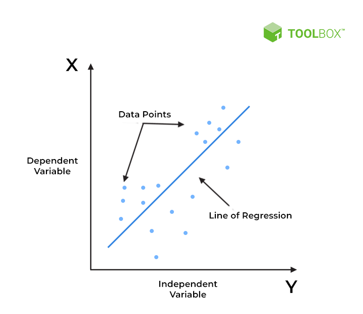

Linear Regression

Overview
A statistical approach to simulating the relationship between a dependent variable and one or more independent variables
is what referred to as linear regression. It presumes that the dependent variable and the independent variable have a
linear connection, meaning that a change in the independent variable or variables will result in a change in the dependent
variable that is linear.
The linear regression model takes the form of a straight line equation:
y = β0 + β1x1 + β2x2 + ... + βnxn + ε
where y is the dependent variable, x1, x2,..., and xn are the independent variables, 0, 1, 2,..., and n are the coefficients,
and is the error term. The coefficients, while leaving all other variables constant, describe the change in the dependent
variable for a one-unit change in the corresponding independent variable.
In order to minimize the sum of the squared differences between the predicted values and the actual values of the dependent variable, linear regression seeks to estimate the values of the coefficients. The least squares regression approach is often used to do this. The assumption of a linear relationship between the dependent variable and the independent variable(s) is one of the limitations of linear regression. The model might not accurately depict the relationship between the variables if this supposition is not true. Additionally, outliers can significantly affect the estimated coefficients and the predicted values because linear regression is sensitive to them.

As this is a classification problem, linear regression won't be the solution to our problem. Infact we will use Logistic Regression to classify fraudulent transactions
Cleaned Data
Training & Testing Data

Our problem statement is to train our model to identify the fraudulent transactions on the unseen data, a classification algorithm will identify and classify the transactions as fraudulent or non-fraudulent. Let's see this using a Logistic Regression Classifier. After fitting the Logistic Regression model against our training data shown above, the ext step is to make prediction on unseen data which is testing data.
Confusion Matrix
From the confusion matrix above, we get the idea of our True Positive Rate and True Negative Rate, Accuracy, Senstivity, Specificity. To check if our model is performing well, there is cost associated to whether having a false negative case or false positive case is costly for us. Which means predicting a fraud case as non-fraudulent (i.e false negative) or non-fraud as fraud (i.e false positive) is beneficial for us, In this case we will want to decrease the false negative cases which in turn is costly for us when detecting on unseen data, as we will incur a financial loss due to the cases which were not detected as fraudulent. The most common metrics to use for imbalanced dataset are:
- F1 score
- Precision
- Recall
- AUC score (AUC ROC)
- Average precision score (AP)
Let's have a look at our performance metrics.
Code
Conclusion
From the performance metrics we can conclude that naive bayes did a great job in indentifying most of the fraudulent transactions 133 out of 148, although we can also test upsampling or feature importance to increase our recall score such that model is more accurate in predicting fraudlent transactions. Our Logistic Regression model gave an accuracy of 97%. In case of fraudulent transactions recall is better favoured than precision because there is no harm in alerting a non-fraud transaction as fraud, but there will be more loss if a fraud transactions is labelled as non-fraud.